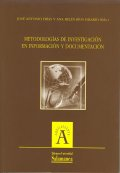

|  |
| BOOK AND SOFTWARE REVIEWS | ||||
Frías, José Antonio; Ríos Hilario, Ana B.(eds.) Metodologías de investigación en Información y Documentación [Research Methods in Library and Information Science] Salamanca: Universidad, 2004. 284 p. ISBN 84-7800-563-3 (Colección Aquilafuente, 80)
This book contains the contributions to the Conference "1st Coloquio Internacional de Ciencias de la Documentación", titled "Pluralismo metodológico en la investigación en Ciencias de la Documentación" [Methodological pluralism in LIS research], held in Salamanca (Spain) in November 2000.
The objective of this publication is to present a general view of different research methodologies in LIS, and to explain main elements and phases of the research process in our discipline. The editors are professors in the Faculty of Documentation in the University of Salamanca, where José Frías is Head of Department of Library and Information Science.
The first contribution, by Peter Hernon, of Simmons College Graduate School of LIS (USA), is the most comprehensive and general. He discusses "Components of the research process: where do we need to focus attention?", and describes the research steps: problem statement, literature review, theoretical framework, objectives, research questions and hypotheses, research design, methods of data collection, processing and analysis, qualitative studies and presentation of findings. As editor-in- chief of the Journal of Academic Librarianship when he wrote his presentation, Hernon recommends some basic and useful points to consider when LIS researchers send their papers for reviewing and publication, and explains reasons why LIS editors rejects manuscripts: findings not generalizable, failure to address the 'so what' question in the problem statement, poor writing, inadequate scholarship, weak statistical methods, wrong choice of journal, little new material or insights, etc.
The second chapter, by José Gómez-Hernandez, Professor of Librarianship in University of Murcia, is dedicated to literature review methods for LIS research: "La recopilación documental: para qué y cómo documentarse en Ciencias de la Información Documental", and explains information literacy skills for research in LIS, information sources and their evaluation criteria, concluding with some recommendations for better access to and use of information sources in LIS research.
The third paper is an study of research methodologies based in survey questionnaires. Written by Emilio Delgado López-Cózar, of University of Granada, it is entitled "La nvestigación por encuesta en la biblioteconomía y documentación española: análisis de las encuestas publicadas en revistas y congresos de la especialidad entre 1976 y 1997", and Delgado finds and details some lacks in Spanish research based in this method.
The book continues with two studies on experimental research: Ronald R. Powell, of Wayne State University, writes about "Experimental research", and reviews conditions of causality, bases for inferring causal relationships, control of variables, internal and external validity, experimental designs, and concludes with a reflection on ethics of experimental research. In addition, M. P. Galindo Villardón, University of Granada, describes the uses of statistics in LIS research and bibliometric analysis in her chapter "Análisis de datos" [Data analysis].
There are four chapters dedicated to qualitative research. The first, "Qualitative and nonqualitative research methodologies: thesis, antithesis, or synthesis?", is by Jack D. Glazier, of Emporia State University, and is dedicated to a review of some of the key issues associated with qualitative research. The unique and subjective nature of many of qualitative methodologies justifies his attention to questions such as the politics and ethics of qualitative research, assumptions guiding those methodologies, validity and reliability, etc. In the following paper, José Frías (of University of Salamanca, Spain), and Ángel Borrego reviews different qualitative methods used in LIS: "Más allá de la cantidad: la incorporación de los métodos cualitativos a la investigación en Información y Documentación". After this, S. Murillo de la Vega (Professor of Sociology at University of Salamanca) explains qualitative research methods such as interviews and focus groups, and their use in LIS: "Introducción a las técnicas cualitativas en un marco documental". And finally, Pablo del Río Pereda presents research based in content analysis: "La documentación como análisis de culturas vivas: un acercamiento histórico al análisis de contenido".
The book continues with a paper of M.F. Abad García about assessment methodologies of information systems: "Evaluación de sistemas de información: método y perspectivas", and concludes with two works: the first an essay on Feyerabend's philosophy of science and the concept of "pluralism", by J.M. Izquierdo Arroyo, Professor of University of Murcia, and titled "Pluralismo metodológico: la actitud de Feyerabend". And the last paper is a reflection of a veteran Spanish professor and librarian, Emilia Currás, about evolution and changes in LIS: "Epílogo: Lo que va de ayer a hoy".
It is obvious that to give thought to research methods and related topics is quite important. As Hernon notes (p. 30) sometimes it is observed that:
much of the research in LIS is episodic. Rarely do researchers build a continuing series of projects so that their own work is a coherent whole. Nor do they often build on one another's work. Fragmentation of research efforts reduces the overall impact of the work that is done.
I consider that LIS researchers will change this situation, and that this book is an important help for a better comprehension of different ways to improve Spanish LIS research. Making a global evaluation of this book, we could say that it is an holistic analysis of topics and questions regarding research methods in LIS, and useful for development of information science in Spain.
José A. Gómez Hernández.
Professor of Librarianship
University of Murcia, Spain
How to cite this review
Gómez Hernández, J. (2006). Review of: Frías, José Antonio; Ríos Hilario, Ana B. (Eds.) Metodologías de investigación en Información y Documentación Salamanca: Universidad, 2004. Information Research, 11(2), review no. R200 [Available at: http://informationr.net/ir/reviews/revs200.html]